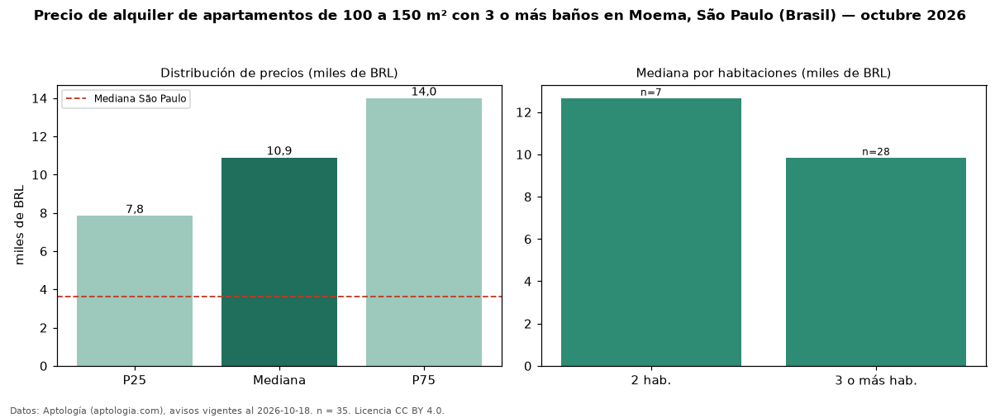

Precio de alquiler de apartamentos de 100 a 150 m² con 3 o más baños en Moema, São Paulo (Brasil) — octubre 2026
BRL 10.900 al mes es el canon mediano de apartamentos de 100 a 150 m² con 3 o más baños en alquiler en Moema, São Paulo (Brasil) (n = 35 avisos). Eso es 9 % más que la mediana de los apartamentos de 100 a 150 m² en alquiler de Moema (BRL 10.000, n = 62); este segmento reúne el 56 % de esos avisos. Por metro cuadrado, la mediana es BRL 87,84/m² al mes (n = 34), 1 % por encima de los apartamentos de 100 a 150 m² en alquiler de Moema (BRL 86,78/m²). El área mediana anunciada es 125 m². El segmento con más oferta es el de 3 o más habitaciones (28 avisos, mediana BRL 9.850); pasar de 2 habitaciones a 3 o más habitaciones cambia la mediana −22 %. La cuota de mantenimiento o condominio mediana declarada es BRL 2.373 al mes (n = 35), aparte del canon. La mitad central de los avisos va de BRL 7.850 a BRL 14.000 (razón 1,8), una dispersión moderada. La mediana de todos los apartamentos en alquiler de São Paulo es BRL 3.621 (+201 % de diferencia). Datos: Aptología (aptologia.com), CC BY 4.0 — https://www.aptologia.com/br/aluguel/sao-paulo/moema. Archivos: PDF, CSV con las cifras y gráfica PNG.

| Avisos únicos | 35 |
|---|---|
| Percentil 25 | COP 7.850 |
| Mediana | COP 10.900 |
| Percentil 75 | COP 14.000 |
| Mediana por m² | COP 87 |
Fuente: avisos vigentes de portales inmobiliarios recopilados por Aptología, deduplicados (mínimo 30 avisos únicos por celda). Precios pedidos, no cerrados. Fecha: 2026-10-18.